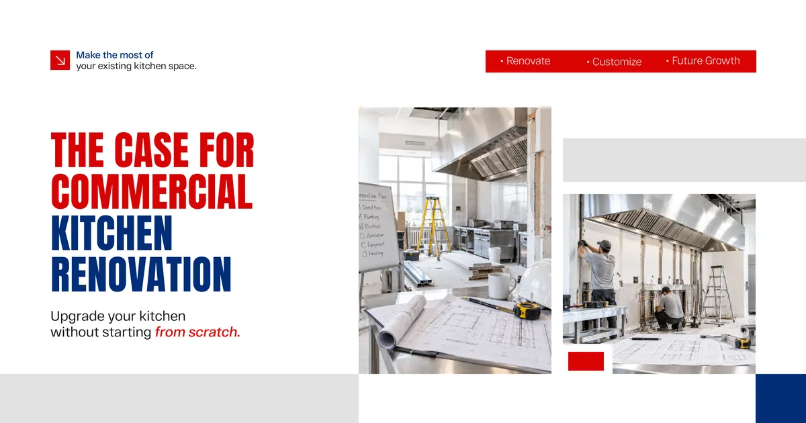
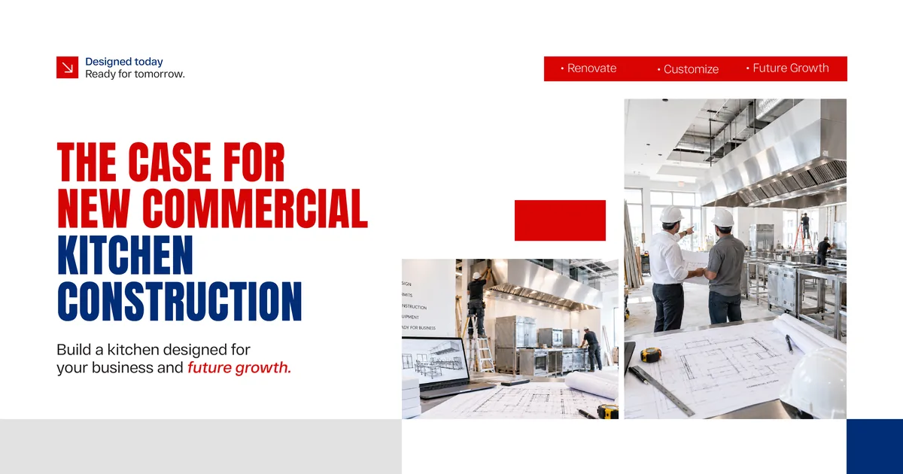
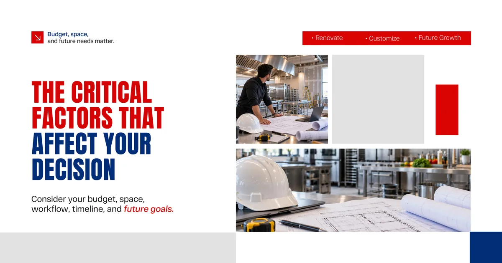
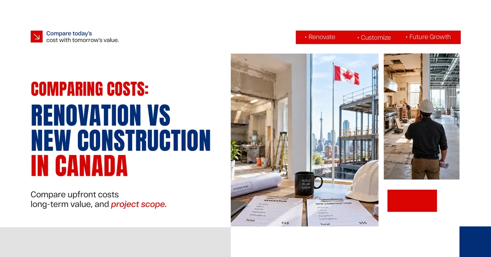

Do you renovate the existing commercial kitchen? Or do you tear it down and start fresh with new construction?
Both paths come with real advantages, real costs, and real risks. The right choice depends on your specific situation, your long-term business goals, and critically the expertise of the construction company you choose to work with.
This guide breaks down both options clearly so you can make a confident, informed decision.
Understanding What Is Really at Stake
A commercial kitchen is not just a room with appliances. It is a fully engineered operational environment. Ventilation systems, grease traps, fire suppression, electrical loads, plumbing configurations, health code compliance, and workflow design all work together to make the space function safely and efficiently.
When any of these systems underperform or fail to meet current standards, your entire operation feels the impact slower service, health inspection failures, higher energy costs, and staff frustration that affects turnover and output.
This is why the decision between renovation and new construction deserves serious analysis, not a quick cost comparison.

The Case for Commercial Kitchen Renovation
Renovation is the most common path taken by food service businesses in Canada, and for good reason. In many situations, it delivers the improvements you need at a fraction of the cost and timeline of new construction.
When Renovation Makes Sense
If your existing kitchen has a solid structural foundation, adequate square footage, and serviceable utility infrastructure, renovation can modernize the space without the disruption of a ground-up rebuild. This is especially true when the primary issues are layout inefficiency, outdated equipment, or surfaces that no longer meet health code requirements.
Renovation also makes sense when your business cannot afford an extended closure. Experienced commercial builders can often phase renovation work to keep partial operations running while construction progresses in stages.
What a Professional Renovation Covers
A thorough commercial kitchen renovation handled by a qualified building construction company typically includes:
Layout reconfiguration to improve workflow and reduce bottlenecks, full replacement of ventilation and exhaust systems to meet current fire and health codes, upgraded electrical panels and circuits to support modern commercial equipment, plumbing updates including grease trap replacement and drainage improvements, new flooring surfaces rated for commercial kitchen environments, and wall and ceiling finishes that meet health authority standards.
The Honest Limitations of Renovation
Renovation has limits. If the existing space is fundamentally too small, structurally compromised, or sitting on utility infrastructure that is too outdated to upgrade cost effectively, renovation becomes a band-aid solution rather than a real fix. In these cases, the cost of renovation can approach or even exceed the cost of new construction while still leaving underlying problems unresolved.
This is exactly why a proper assessment from an experienced commercial construction company before committing to either path is so important.

The Case for New Commercial Kitchen Construction
New construction gives you something renovation cannot: a completely clean slate. Every system, every surface, every square foot is designed and built to your exact operational requirements and current code standards.
When New Construction Makes Sense
If you are building a new facility from the ground up, expanding into a new location, or working with a space that requires such extensive structural changes that renovation costs become prohibitive, new construction is often the more financially sound long-term decision.
New construction also makes sense when your business has evolved significantly since the original kitchen was built. A restaurant that has doubled in volume, added catering operations, or shifted its menu concept may find that the original kitchen layout simply cannot be adapted efficiently through renovation.
What New Construction Delivers
| Benefit | Renovation | New Construction |
|---|---|---|
| Custom layout design | Partially limited by existing structure | Fully customizable from ground up |
| Modern utility infrastructure | Upgraded within existing constraints | Designed to current standards entirely |
| Health code compliance | Achieved through targeted upgrades | Built in from the start |
| Timeline to completion | Generally shorter | Longer but more comprehensive |
| Upfront cost | Lower to moderate | Higher initial investment |
| Long term operational efficiency | Improved but constrained | Maximum efficiency potential |
| Disruption to operations | Manageable with phasing | Significant during build period |
The upfront investment in new construction is higher. But many food service operators find that the long-term operational savings in energy efficiency, reduced maintenance costs, and improved workflow output justify that investment within a few years of opening.

The Critical Factors That Affect Your Decision
Beyond the basic renovation versus new construction comparison, several factors specific to your situation in Canada will shape the right answer.
Building Age and Structural Condition
Older commercial buildings in Canada often contain infrastructure challenges that are invisible until construction begins. Outdated electrical systems, asbestos containing materials, inadequate drainage slopes, and foundation issues can turn a straightforward renovation into a significantly more complex and expensive project. A thorough pre-construction assessment by qualified local construction companies is essential before committing to a renovation budget.
Canadian Health and Safety Code Requirements
Health authorities across Canadian provinces have updated commercial kitchen standards significantly in recent years. Ventilation requirements, surface material standards, grease management systems, and fire suppression specifications have all evolved. Whether you renovate or build new, your kitchen must meet current provincial and municipal standards entirely, not just in the areas being touched.
Operational Continuity
For many food service businesses in Canada, closing entirely for construction is not financially viable. Phased renovation approaches managed by experienced commercial construction companies can maintain partial revenue during the project. New construction, by contrast, typically requires a complete operational pause until the space is fully commissioned and approved.
Budget and Financing
This is where honest conversations with your construction partner matter most. A detailed cost comparison prepared by a reputable construction company in Canada should cover not just construction costs but also equipment procurement, permitting fees, health authority inspection costs, operational downtime costs during construction, and the realistic contingency reserves for each scenario.

Comparing Costs: Renovation vs New Construction in Canada
| Cost Category | Renovation | New Construction |
|---|---|---|
| Design and engineering fees | Moderate | Higher |
| Structural and demolition work | Variable based on scope | Included in full build cost |
| Mechanical, electrical, plumbing | Targeted upgrades | Full new installation |
| Equipment and fixtures | Partial reuse possible | Full procurement required |
| Permitting and inspections | Standard renovation permits | Full building permit process |
| Contingency reserve | 15 to 20 percent recommended | 10 to 15 percent typical |
| Timeline | 6 to 16 weeks typical | 6 to 18 months depending on scope |
These figures vary significantly based on location, project scope, and the specific conditions of your existing space. Getting accurate numbers requires a proper site assessment and detailed proposal from a qualified team.
Why the Right Construction Partner Changes Everything
Whether you choose renovation or new construction, the company you hire determines how smoothly the project runs, how accurately the budget holds, and how well the finished kitchen actually performs.
Commercial kitchen construction is a specialized discipline. It requires coordination between general construction, mechanical engineering, plumbing, electrical, ventilation, fire protection, and health authority compliance all happening within a tight schedule that accounts for your operational realities.
This is where Platinum Construction stands out as one of the most capable and trusted names among commercial construction companies operating in Canada today.
Why Platinum Construction Is the Right Choice for Commercial Kitchen Projects
Platinum Construction brings a level of experience and professionalism to commercial kitchen projects that genuinely sets them apart from the typical local construction companies competing for this work.
Their team understands the full scope of what commercial kitchen construction demands. From the initial site assessment and feasibility analysis through design coordination, permitting, construction execution, and final health authority sign-off, Platinum Construction manages every phase with discipline and accountability.
As a full service building construction company, they bring established relationships with mechanical, electrical, and plumbing subcontractors who have specific commercial kitchen experience. This means faster scheduling, better pricing, and fewer coordination problems during the build.
Clients working with Platinum Construction receive a dedicated project manager who stays with the project from start to finish. Every change order is documented. Every cost is tracked transparently. Every milestone is communicated clearly so there are no surprises when the final invoice arrives.
For food service businesses across Canada looking for the best construction company to handle their commercial kitchen renovation or new construction project, Platinum Construction delivers the expertise, systems, and accountability that complex projects demand.
Making the Final Decision
If you are still weighing renovation against new construction for your commercial kitchen, here is a practical framework to guide your thinking.
Choose renovation if your existing space is structurally sound, has adequate square footage for your operational needs, and the primary issues are systems, surfaces, or equipment that can be effectively upgraded within the existing footprint.
Choose new construction if your space is fundamentally inadequate for your current or planned operational volume, if structural or infrastructure issues make renovation costs prohibitive, or if you are developing a new facility where a custom built kitchen from the ground up is the logical starting point.
In either case, the single most important step you can take right now is to engage a qualified construction company in Canada for a proper assessment before making any financial commitment.
Platinum Construction offers exactly that starting point. Their team will evaluate your existing space, understand your operational requirements, and provide honest, detailed recommendations on which path makes the most sense for your specific situation and budget. Visit platinumconstruction.com to get started with a free consultation.
Frequently Asked Questions
Is it cheaper to renovate or build a new commercial kitchen?
Renovation usually has a lower upfront cost, but extensive structural or infrastructure issues can make new construction a better long-term investment.
How long does a commercial kitchen renovation take?
Depending on the project's size and complexity, a commercial kitchen renovation typically takes around 6 to 16 weeks.
How long does new commercial kitchen construction take?
A new commercial kitchen project can take approximately 6 to 18 months, depending on the project scope and approval requirements.
Can my restaurant remain open during a kitchen renovation?
In some cases, yes. A phased renovation can allow businesses to continue partial operations during construction.
When should I choose new construction instead of renovation?
New construction is often the better option when the existing space is structurally inadequate, too small, or unable to support your future operational needs.
Why should I hire a professional construction company for my commercial kitchen project?
A professional construction company can manage planning, permits, construction, system installations, and compliance requirements to ensure a smooth and efficient project.